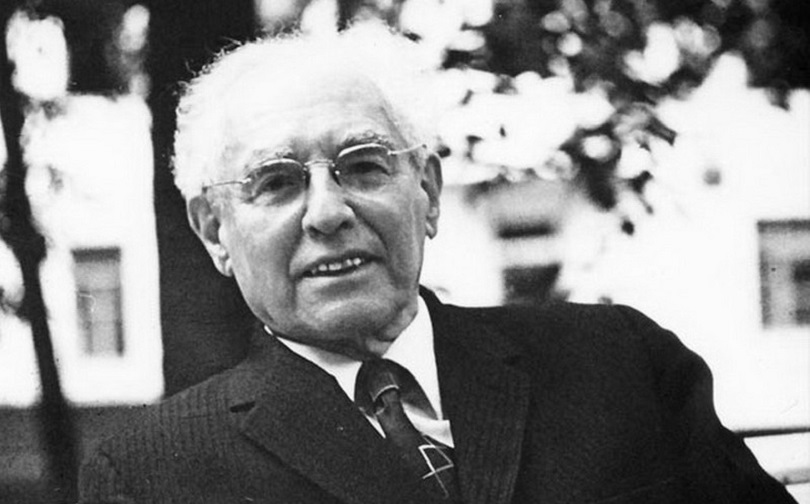
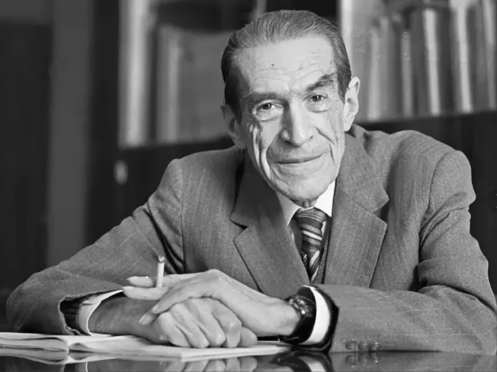

Cоветский психолог, педагог и педолог. Известен как автор культурно-исторической теории в психологии, основатель социального конструктивизма и современной коррекционной педагогики.

Александр Романович Лурия 1902-1977
Советский психолог и врач-невролог, один из основателей нейропсихологии, сотрудник Л. С. Выготского и один из лидеров круга Выготского. Доктор педагогических наук, доктор медицинских наук, профессор, действительный член Академии педагогических наук РСФСР и АПН СССР.

Алексей Николаевич Леонтьев 1903-1979
Советский психолог, философ, педагог и организатор науки. Создатель теории деятельности. Занимался проблемами общей психологии и методологией психологического исследования. Основатель и первый декан факультета психологии Московского государственного университета им. М.В. Ломоносова.
Другие известные психологи
Зигмунд Фрейд — австрийский психолог, психоаналитик, психиатр и невролог. Наиболее известен как основатель психоанализа, который оказал значительное влияние на психологию, медицину, социологию, антропологию, литературу и искусство XX века.
Курт Левин — немецкий и американский психолог, чьи идеи оказали большое влияние на американскую социальную психологию и многие другие школы и направления, в том числе на теорию культурного развития Льва Выготского и исследователей «круга Выготского».
Блюма Вульфовна Зейгарник — советский психолог, основательница советской патопсихологии. Наиболее известна тем, что изучала психологический эффект, заключающийся в том, что человек лучше запоминает прерванные действия, чем завершённые. Впоследствии этот феномен был назван "эффектом Зейгарник".
Карл Густав Юнг — швейцарский психолог и психиатр, философ и культуролог, педагог, основоположник аналитической психологии.
Карен Хорни — американский психоаналитик и психолог, одна из ключевых фигур неофрейдизма. Акцентировала значение воздействия окружающей социальной среды на формирование личности.